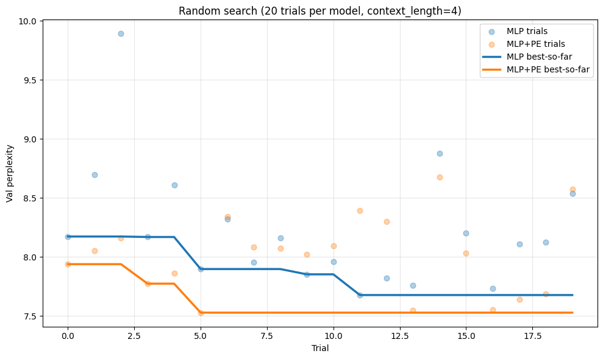
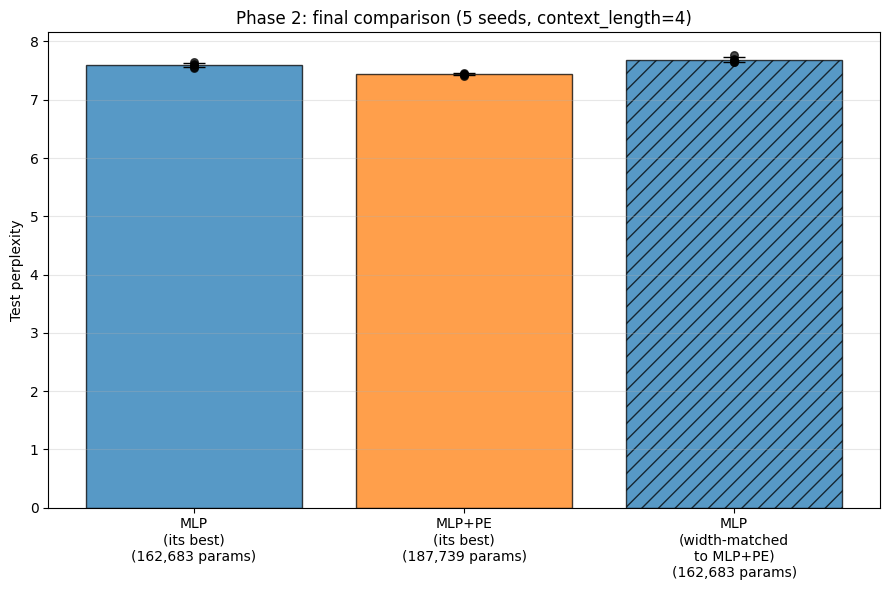
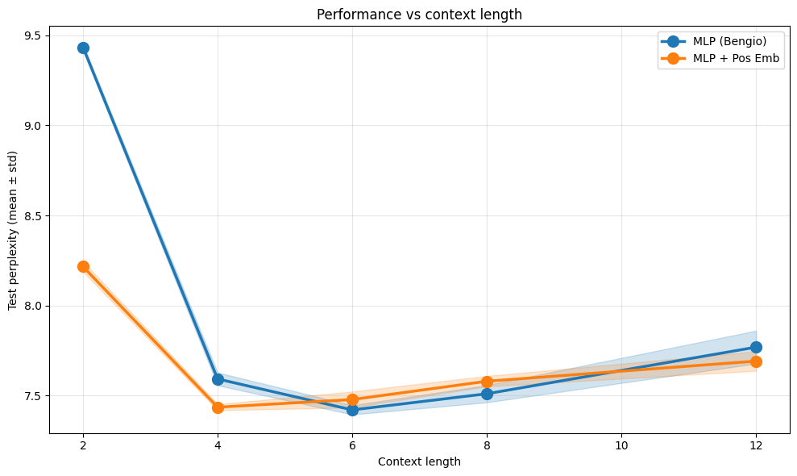
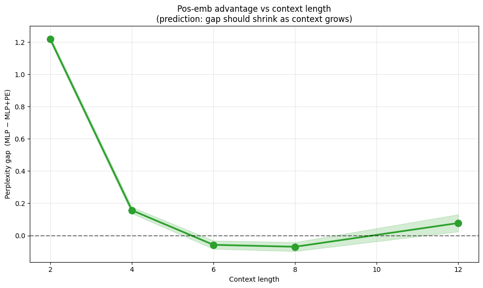
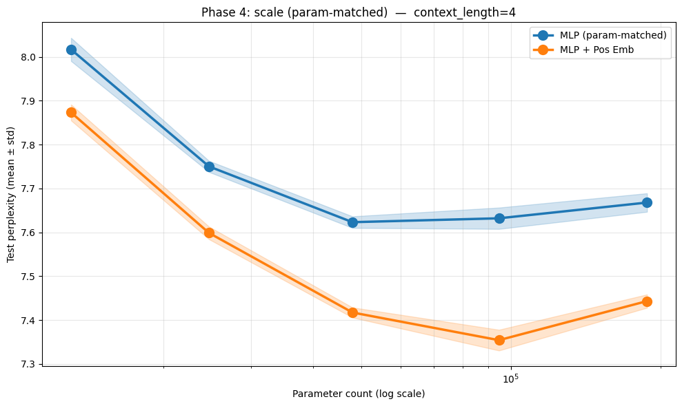
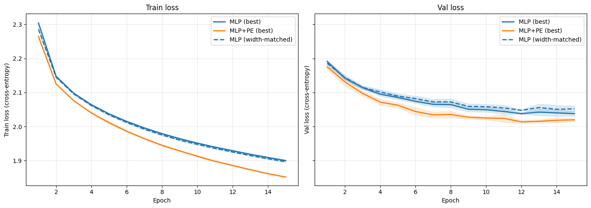

import torch
import torch.nn as nn
import torch.nn.functional as FClassic Bengio style MLP
class MLP(nn.Module):
def __init__(self, vocab_size,context_length,embedding_dim,hidden_dim):
super().__init__()
self.h_in = embedding_dim*context_length
self.emb_layer = nn.Embedding(vocab_size,embedding_dim)
self.h = nn.Linear(embedding_dim*context_length,hidden_dim)
self.bn = nn.BatchNorm1d(hidden_dim)
self.tanh = nn.Tanh()
self.out = nn.Linear(hidden_dim,vocab_size)
def forward(self,x):
x = self.emb_layer(x).reshape(-1,self.h_in)
x = self.h(x)
x = self.bn(x)
x = self.tanh(x)
o = self.out(x)
return oMy variant with position embedding
class MLP_PE(nn.Module):
def __init__(self,vocab_size,context_length,word_embedding_dim,hidden_dim,max_pos,pos_embedding_dim):
"""
(B,C) → (B, C*E + P) → (B, H) → (B, V)
"""
super().__init__()
self.max_pos = max_pos
self.w_in = word_embedding_dim*context_length
self.p_in = pos_embedding_dim
self.h_in =self.w_in + self.p_in
self.word_emb_layer = nn.Embedding(vocab_size,word_embedding_dim)
self.pos_emb_layer = nn.Embedding(max_pos,pos_embedding_dim)
self.h = nn.Linear(self.h_in,hidden_dim)
self.bn = nn.BatchNorm1d(hidden_dim)
self.tanh = nn.Tanh()
self.out = nn.Linear(hidden_dim,vocab_size)
def forward(self,x,pos):
assert pos.shape[0] == x.shape[0]
pos = torch.clamp(pos,max=self.max_pos -1)
x_w = self.word_emb_layer(x).reshape(-1,self.w_in) # -> (B,C*E)
x_p = self.pos_emb_layer(pos) # -> (B,P)
x = torch.cat((x_w,x_p),dim=1) # -> (B, C*E + P)
x = self.h(x)
x = self.bn(x)
x = self.tanh(x)
return self.out(x)MLP_model = MLP(27,4,10,200)PosMLP = MLP_PE(27,4,10,172,15,10)sum(p.numel() for p in MLP_model.parameters())14297sum(p.numel() for p in PosMLP.parameters())14207from torch.utils.data import Dataset
from torch.utils.data import DataLoader
class NamesDataset(Dataset):
def __init__(self,names:list,stoi:dict,context_length:int):
super().__init__()
Xs = []
ys = []
pos = []
for name in names:
chars = "."*context_length + name + "."
p = 0
for i in range(len(chars) - context_length):
x = [stoi[chars[j]] for j in range(i,i+context_length)]
y = stoi[chars[i+context_length]]
pos.append(p)
p+=1
Xs.append(x)
ys.append(y)
self.x = torch.tensor(Xs)
self.y = torch.tensor(ys)
self.pos = torch.tensor(pos)
def __getitem__(self, index):
return self.x[index],self.pos[index],self.y[index]
def __len__(self):
return len(self.y)
Setup Data for experiments across hyperparameter search space
CONFIG = {
'context_length':4,
'batch_size' : 512
}import random
with open("data/names.txt","r") as f:
names = f.read().splitlines()
print(len(names))
random.seed(123)
random.shuffle(names)
tr_idx = int(0.8 * len(names))
val_idx = int(0.9 * len(names))
vocab = list(set(''.join(names)))
vocab.sort()
stoi = {k:v+1 for v,k in enumerate(vocab)}
stoi['.'] = 0
train_dataset = NamesDataset(names[:tr_idx],stoi,CONFIG['context_length'])
val_dataset = NamesDataset(names[tr_idx:val_idx],stoi,CONFIG['context_length'])
test_dataset = NamesDataset(names[val_idx:],stoi,CONFIG['context_length'])
train_dataloader = DataLoader(dataset=train_dataset,
batch_size=CONFIG['batch_size'],
shuffle=True,
num_workers=0)
val_dataloader = DataLoader(dataset=val_dataset,
batch_size=CONFIG['batch_size'],
shuffle=False,
num_workers=0)
test_dataloader = DataLoader(dataset=test_dataset,
batch_size=CONFIG['batch_size'],
shuffle=False,
num_workers=0)32033Research Questions * Does adding the position embedding layer result in improved performance (With extra care taken such that parameter tuning does not produce any signal distortion)? * Is this performance due to actual architectural gain or simply because of a larger parameter count (If widths are matched) * How does varying the context length of the model affect the performance variance across model architectures?
Experiment Infrastructure
All experiments below are resumable — results are appended to JSONL logs in experiments/logs/. If you interrupt and restart, completed runs are detected and skipped. Plots and configs go to experiments/plots/ and experiments/configs/.
The four phases:
- Phase 1 — Independent hyperparameter tuning. Random search, 20 trials per model at
context_length=4. Each model gets its own best HPs (no shared HPs = no tuning bias toward one architecture). - Phase 2 — Final comparison. Best-vs-best with 5 seeds each, plus a width-matched MLP at MLP+PE’s HPs to isolate “architecture vs extra capacity”.
- Phase 3 — Context-length sweep (the money plot). Same best HPs from Phase 1, vary
context_length ∈ {2, 4, 6, 8, 12}. Tests the mechanism prediction: pos-emb advantage should shrink as context grows. - Phase 4 — Width sweep with parameter matching. Vary
hidden_dim, match params on the MLP side. Tests whether the architectural gap is robust across scale.
import os
import json
import math
import time
from pathlib import Path
import numpy as np
import matplotlib.pyplot as plt
from tqdm.auto import tqdm
import torch.optim as optim
# Output directories
OUTPUT_DIR = Path("experiments")
(OUTPUT_DIR / "logs").mkdir(parents=True, exist_ok=True)
(OUTPUT_DIR / "plots").mkdir(parents=True, exist_ok=True)
(OUTPUT_DIR / "configs").mkdir(parents=True, exist_ok=True)
# Device
DEVICE = torch.device("cuda" if torch.cuda.is_available() else "cpu")
print(f"Using device: {DEVICE}")
if DEVICE.type == "cuda":
print(f"GPU: {torch.cuda.get_device_name(0)}")
# Globals derived from the existing dataset setup
VOCAB_SIZE = len(stoi)
itos = {v: k for k, v in stoi.items()}
print(f"Vocab size: {VOCAB_SIZE}")
# Position embedding safe upper bound (max name length in this dataset is ~15)
MAX_POS = 20
def set_seed(seed: int):
random.seed(seed)
np.random.seed(seed)
torch.manual_seed(seed)
if torch.cuda.is_available():
torch.cuda.manual_seed_all(seed)
def count_params(model):
return sum(p.numel() for p in model.parameters())
def log_run(log_path, record):
"""Append a single result to a JSONL file (append-only -> resumable)."""
log_path = Path(log_path)
log_path.parent.mkdir(parents=True, exist_ok=True)
with open(log_path, "a") as f:
f.write(json.dumps(record) + "\n")
def read_log(log_path):
"""Read JSONL file into a list of dicts (empty list if absent)."""
log_path = Path(log_path)
if not log_path.exists():
return []
out = []
with open(log_path) as f:
for line in f:
if line.strip():
out.append(json.loads(line))
return outUsing device: cuda
GPU: NVIDIA GeForce RTX 4050 Laptop GPU
Vocab size: 27# Parameter accounting -- used for width-matched and param-matched comparisons.
def count_mlp_params_from_config(c, vocab_size=VOCAB_SIZE):
e, ctx, h = c['embedding_dim'], c['context_length'], c['hidden_dim']
return (vocab_size * e
+ (e * ctx) * h + h # hidden Linear
+ 2 * h # BatchNorm (gamma, beta)
+ h * vocab_size + vocab_size) # output Linear
def count_mlp_pe_params_from_config(c, vocab_size=VOCAB_SIZE):
e, ctx, h = c['embedding_dim'], c['context_length'], c['hidden_dim']
p_e = c['pos_embedding_dim']
max_pos = c.get('max_pos', MAX_POS)
return (vocab_size * e
+ max_pos * p_e
+ (e * ctx + p_e) * h + h
+ 2 * h
+ h * vocab_size + vocab_size)
def find_mlp_hidden_for_target_params(target, embedding_dim, context_length, vocab_size=VOCAB_SIZE):
"""
Solve for hidden_dim such that MLP total params ~= target.
Total = V*E + V + H*(E*C + 3 + V) (BN contributes 2H, +H from Linear bias, +1*H counted in 3)
"""
h = (target - vocab_size * embedding_dim - vocab_size) / (embedding_dim * context_length + 3 + vocab_size)
return max(1, int(round(h)))
# Sanity check the formulas against the user's hand-tuned configs
_mlp_cfg = {'embedding_dim': 10, 'context_length': 4, 'hidden_dim': 200}
_pe_cfg = {'embedding_dim': 10, 'context_length': 4, 'hidden_dim': 172,
'pos_embedding_dim': 10, 'max_pos': 15}
print(f"Param check -- MLP (E=10,C=4,H=200): formula={count_mlp_params_from_config(_mlp_cfg)}, module={count_params(MLP(27,4,10,200))}")
print(f"Param check -- MLP_PE (E=10,C=4,H=172): formula={count_mlp_pe_params_from_config(_pe_cfg)}, module={count_params(MLP_PE(27,4,10,172,15,10))}")Param check -- MLP (E=10,C=4,H=200): formula=14297, module=14297
Param check -- MLP_PE (E=10,C=4,H=172): formula=14207, module=14207# Training, evaluation, and generation primitives
def build_model(config, model_type):
if model_type == "mlp":
return MLP(
vocab_size=VOCAB_SIZE,
context_length=config['context_length'],
embedding_dim=config['embedding_dim'],
hidden_dim=config['hidden_dim'],
)
elif model_type == "mlp_pe":
return MLP_PE(
vocab_size=VOCAB_SIZE,
context_length=config['context_length'],
word_embedding_dim=config['embedding_dim'],
hidden_dim=config['hidden_dim'],
max_pos=config.get('max_pos', MAX_POS),
pos_embedding_dim=config['pos_embedding_dim'],
)
else:
raise ValueError(f"Unknown model_type: {model_type}")
def evaluate(model, dataloader, model_type, device=None):
device = device or DEVICE
model.eval()
total_loss, total_count = 0.0, 0
with torch.no_grad():
for x, pos, y in dataloader:
x, pos, y = x.to(device), pos.to(device), y.to(device)
logits = model(x) if model_type == "mlp" else model(x, pos)
total_loss += F.cross_entropy(logits, y, reduction='sum').item()
total_count += y.size(0)
return total_loss / total_count
def train_one_epoch(model, dataloader, optimizer, model_type, device=None):
device = device or DEVICE
model.train()
total_loss, total_count = 0.0, 0
for x, pos, y in dataloader:
x, pos, y = x.to(device), pos.to(device), y.to(device)
logits = model(x) if model_type == "mlp" else model(x, pos)
loss = F.cross_entropy(logits, y)
optimizer.zero_grad()
loss.backward()
optimizer.step()
total_loss += loss.item() * y.size(0)
total_count += y.size(0)
return total_loss / total_count
def train_model(config, model_type, train_loader, val_loader, device=None, verbose=False):
"""Train a single model. Returns dict with metrics + trained (best-val) model."""
device = device or DEVICE
set_seed(config.get('seed', 0))
model = build_model(config, model_type).to(device)
optimizer = optim.AdamW(
model.parameters(),
lr=config['lr'],
weight_decay=config.get('weight_decay', 0.0),
)
train_losses, val_losses = [], []
best_val = float('inf')
best_state = None
for epoch in range(config['epochs']):
tl = train_one_epoch(model, train_loader, optimizer, model_type, device)
vl = evaluate(model, val_loader, model_type, device)
train_losses.append(tl)
val_losses.append(vl)
if vl < best_val:
best_val = vl
best_state = {k: v.detach().cpu().clone() for k, v in model.state_dict().items()}
if verbose:
print(f" epoch {epoch+1}/{config['epochs']}: train={tl:.4f}, val={vl:.4f}")
if best_state is not None:
model.load_state_dict(best_state)
return {
'model': model,
'n_params': count_params(model),
'train_losses': train_losses,
'val_losses': val_losses,
'best_val_loss': best_val,
'best_val_perplexity': math.exp(best_val),
}
@torch.no_grad()
def generate_samples(model, model_type, context_length, max_pos=MAX_POS,
num_samples=20, max_len=20, temperature=1.0, device=None, seed=42):
"""Autoregressive sampling: start from all dots, decode until '.' or max_len."""
device = device or DEVICE
set_seed(seed)
model.eval()
samples = []
for _ in range(num_samples):
chars = '.' * context_length
p = 0
out_chars = []
while True:
x = torch.tensor([[stoi[c] for c in chars[-context_length:]]], device=device)
pos = torch.tensor([min(p, max_pos - 1)], device=device)
logits = model(x) if model_type == "mlp" else model(x, pos)
probs = F.softmax(logits / temperature, dim=-1)
ix = torch.multinomial(probs, 1).item()
ch = itos[ix]
if ch == '.':
break
out_chars.append(ch)
chars = chars + ch
p += 1
if len(out_chars) >= max_len:
break
samples.append(''.join(out_chars))
return samples
def build_dataloaders_for_ctx(context_length, batch_size, names, stoi, tr_idx, val_idx):
"""Build train/val/test loaders for a specific context_length."""
train_ds = NamesDataset(names[:tr_idx], stoi, context_length)
val_ds = NamesDataset(names[tr_idx:val_idx], stoi, context_length)
test_ds = NamesDataset(names[val_idx:], stoi, context_length)
tl = DataLoader(train_ds, batch_size=batch_size, shuffle=True, num_workers=0)
vl = DataLoader(val_ds, batch_size=batch_size, shuffle=False, num_workers=0)
tstl = DataLoader(test_ds, batch_size=batch_size, shuffle=False, num_workers=0)
return tl, vl, tstlPhase 1 — Independent Hyperparameter Tuning
Random search, 20 trials per model. Each trial gets a random (embedding_dim, hidden_dim, lr, weight_decay) combo (plus pos_embedding_dim for MLP+PE). Single seed during tuning to keep the budget honest. Selection criterion: best val loss across epochs.
def sample_config(model_type, context_length, trial_seed, batch_size=512, epochs=10):
# Distinct seed offsets so MLP and MLP+PE explore independent HP draws
rng = random.Random((0 if model_type == "mlp" else 1000) + trial_seed)
c = {
'context_length': context_length,
'embedding_dim': rng.choice([8, 16, 24, 32]),
'hidden_dim': rng.choice([128, 256, 512, 1024]),
'lr': 10 ** rng.uniform(-4, -2),
'weight_decay': rng.choice([0.0, 1e-4, 1e-3]),
'batch_size': batch_size,
'epochs': epochs,
'seed': 0,
}
if model_type == "mlp_pe":
c['pos_embedding_dim'] = rng.choice([8, 16, 24])
c['max_pos'] = MAX_POS
return c
def phase1_tune(model_type, n_trials, context_length, names, stoi, tr_idx, val_idx,
log_path, batch_size=512, epochs=10):
existing = read_log(log_path)
n_done = len(existing)
print(f"[Phase 1: {model_type}] {n_done} existing trials; running {max(0, n_trials - n_done)} more.")
train_loader, val_loader, _ = build_dataloaders_for_ctx(
context_length, batch_size, names, stoi, tr_idx, val_idx
)
results = list(existing)
for i in tqdm(range(n_done, n_trials), desc=f"Phase 1: {model_type}"):
config = sample_config(model_type, context_length, trial_seed=i,
batch_size=batch_size, epochs=epochs)
try:
res = train_model(config, model_type, train_loader, val_loader, DEVICE)
record = {
'trial': i,
'model_type': model_type,
'config': config,
'n_params': res['n_params'],
'best_val_loss': res['best_val_loss'],
'best_val_perplexity': res['best_val_perplexity'],
'train_losses': res['train_losses'],
'val_losses': res['val_losses'],
}
log_run(log_path, record)
results.append(record)
except Exception as e:
print(f" Trial {i} failed: {e}")
best = min(results, key=lambda r: r['best_val_loss'])
print(f"[Phase 1: {model_type}] best val perplexity = {best['best_val_perplexity']:.4f}")
print(f" best config: {best['config']}")
return best, results
PHASE1_TRIALS = 20
PHASE1_CONTEXT_LENGTH = 4
mlp_best, mlp_results = phase1_tune(
"mlp", PHASE1_TRIALS, PHASE1_CONTEXT_LENGTH,
names, stoi, tr_idx, val_idx,
OUTPUT_DIR / "logs" / "phase1_mlp.jsonl",
)
mlp_pe_best, mlp_pe_results = phase1_tune(
"mlp_pe", PHASE1_TRIALS, PHASE1_CONTEXT_LENGTH,
names, stoi, tr_idx, val_idx,
OUTPUT_DIR / "logs" / "phase1_mlp_pe.jsonl",
)
with open(OUTPUT_DIR / "configs" / "phase1_best.json", "w") as f:
json.dump({
'mlp_best_config': mlp_best['config'],
'mlp_pe_best_config': mlp_pe_best['config'],
'mlp_best_val_ppl': mlp_best['best_val_perplexity'],
'mlp_pe_best_val_ppl': mlp_pe_best['best_val_perplexity'],
}, f, indent=2)[Phase 1: mlp] 0 existing trials; running 20 more.[Phase 1: mlp] best val perplexity = 7.6764
best config: {'context_length': 4, 'embedding_dim': 32, 'hidden_dim': 1024, 'lr': 0.0008010592528108037, 'weight_decay': 0.001, 'batch_size': 512, 'epochs': 10, 'seed': 0}
[Phase 1: mlp_pe] 0 existing trials; running 20 more.[Phase 1: mlp_pe] best val perplexity = 7.5275
best config: {'context_length': 4, 'embedding_dim': 32, 'hidden_dim': 1024, 'lr': 0.0011882679597077456, 'weight_decay': 0.001, 'batch_size': 512, 'epochs': 10, 'seed': 0, 'pos_embedding_dim': 24, 'max_pos': 20}def plot_phase1_trajectory(mlp_results, mlp_pe_results, save_path):
fig, ax = plt.subplots(figsize=(10, 6))
mlp_ppls = [r['best_val_perplexity'] for r in mlp_results]
pe_ppls = [r['best_val_perplexity'] for r in mlp_pe_results]
mlp_best_so_far = np.minimum.accumulate(mlp_ppls)
pe_best_so_far = np.minimum.accumulate(pe_ppls)
ax.scatter(range(len(mlp_ppls)), mlp_ppls, alpha=0.35, color='C0', label='MLP trials', s=40)
ax.scatter(range(len(pe_ppls)), pe_ppls, alpha=0.35, color='C1', label='MLP+PE trials', s=40)
ax.plot(mlp_best_so_far, color='C0', linewidth=2.5, label='MLP best-so-far')
ax.plot(pe_best_so_far, color='C1', linewidth=2.5, label='MLP+PE best-so-far')
ax.set_xlabel('Trial')
ax.set_ylabel('Val perplexity')
ax.set_title(f'Random search ({len(mlp_ppls)} trials per model, context_length={PHASE1_CONTEXT_LENGTH})')
ax.legend()
ax.grid(alpha=0.3)
plt.tight_layout()
plt.savefig(save_path, dpi=120, bbox_inches='tight')
plt.show()
plot_phase1_trajectory(mlp_results, mlp_pe_results, OUTPUT_DIR / "plots" / "phase1_tuning_trajectory.png")
Phase 2 — Final Comparison
Three regimes, 5 seeds each:
- (A) MLP at MLP’s best — answers “does PE help, when each model is tuned to its own optimum?”
- (B) MLP+PE at MLP+PE’s best — same question, other side.
- (C) MLP at MLP+PE’s HPs, width-matched — same
hidden_dimandembedding_dimas MLP+PE. Isolates “is the gap from architecture, or from extra params?”
If (B) beats (A) and (B) beats (C), the architectural change is doing real work.
def phase2_final_comparison(mlp_best_config, mlp_pe_best_config, n_seeds, context_length,
names, stoi, tr_idx, val_idx, log_path,
batch_size=512, epochs=15):
train_loader, val_loader, test_loader = build_dataloaders_for_ctx(
context_length, batch_size, names, stoi, tr_idx, val_idx
)
# Width-matched MLP uses MLP+PE's width but no pos-emb keys
width_matched = {
'context_length': context_length,
'embedding_dim': mlp_pe_best_config['embedding_dim'],
'hidden_dim': mlp_pe_best_config['hidden_dim'],
'lr': mlp_pe_best_config['lr'],
'weight_decay': mlp_pe_best_config.get('weight_decay', 0.0),
'batch_size': batch_size,
'epochs': epochs,
}
regimes = [
('mlp', 'best_indep', {**mlp_best_config, 'epochs': epochs}),
('mlp_pe', 'best_indep', {**mlp_pe_best_config, 'epochs': epochs}),
('mlp', 'width_matched', width_matched),
]
existing = read_log(log_path)
seen = {(r['model_type'], r['regime'], r['seed']) for r in existing}
results = list(existing)
total = len(regimes) * n_seeds
pbar = tqdm(total=total, desc="Phase 2", initial=len(seen))
for model_type, regime, base_cfg in regimes:
for seed in range(n_seeds):
if (model_type, regime, seed) in seen:
continue
cfg = {**base_cfg, 'seed': seed}
res = train_model(cfg, model_type, train_loader, val_loader, DEVICE)
test_loss = evaluate(res['model'], test_loader, model_type, DEVICE)
record = {
'model_type': model_type,
'regime': regime,
'seed': seed,
'config': cfg,
'n_params': res['n_params'],
'best_val_loss': res['best_val_loss'],
'best_val_perplexity': res['best_val_perplexity'],
'test_loss': test_loss,
'test_perplexity': math.exp(test_loss),
'train_losses': res['train_losses'],
'val_losses': res['val_losses'],
}
log_run(log_path, record)
results.append(record)
pbar.update(1)
pbar.close()
return results
PHASE2_SEEDS = 5
phase2_log = OUTPUT_DIR / "logs" / "phase2_final.jsonl"
phase2_results = phase2_final_comparison(
mlp_best['config'], mlp_pe_best['config'], PHASE2_SEEDS, PHASE1_CONTEXT_LENGTH,
names, stoi, tr_idx, val_idx, phase2_log,
)def plot_phase2(results, save_path):
by_key = {}
for r in results:
by_key.setdefault((r['model_type'], r['regime']), []).append(r)
keys = [('mlp', 'best_indep'), ('mlp_pe', 'best_indep'), ('mlp', 'width_matched')]
labels = {
('mlp', 'best_indep'): 'MLP\n(its best)',
('mlp_pe', 'best_indep'): 'MLP+PE\n(its best)',
('mlp', 'width_matched'): 'MLP\n(width-matched\nto MLP+PE)',
}
fig, ax = plt.subplots(figsize=(9, 6))
x = np.arange(len(keys))
means, stds, n_params_list = [], [], []
for k in keys:
ppls = [r['test_perplexity'] for r in by_key.get(k, [])]
means.append(np.mean(ppls) if ppls else np.nan)
stds.append(np.std(ppls) if ppls else 0)
n_params_list.append(by_key[k][0]['n_params'] if by_key.get(k) else 0)
colors = ['C0', 'C1', 'C0']
hatches = [None, None, '//']
bars = ax.bar(x, means, yerr=stds, capsize=8, color=colors, alpha=0.75, edgecolor='black')
for b, h in zip(bars, hatches):
if h:
b.set_hatch(h)
for i, k in enumerate(keys):
ppls = [r['test_perplexity'] for r in by_key.get(k, [])]
ax.scatter([i] * len(ppls), ppls, color='black', zorder=3, s=30, alpha=0.7)
xtl = [f"{labels[k]}\n({n_params_list[i]:,} params)" for i, k in enumerate(keys)]
ax.set_xticks(x)
ax.set_xticklabels(xtl)
ax.set_ylabel('Test perplexity')
ax.set_title(f'Phase 2: final comparison ({PHASE2_SEEDS} seeds, context_length={PHASE1_CONTEXT_LENGTH})')
ax.grid(axis='y', alpha=0.3)
plt.tight_layout()
plt.savefig(save_path, dpi=120, bbox_inches='tight')
plt.show()
print("\n--- Phase 2 summary ---")
for k in keys:
ppls = [r['test_perplexity'] for r in by_key.get(k, [])]
if ppls:
print(f" {k}: test_ppl = {np.mean(ppls):.4f} ± {np.std(ppls):.4f} (params={by_key[k][0]['n_params']:,})")
plot_phase2(phase2_results, OUTPUT_DIR / "plots" / "phase2_final_comparison.png")
--- Phase 2 summary ---
('mlp', 'best_indep'): test_ppl = 7.5928 ± 0.0357 (params=162,683)
('mlp_pe', 'best_indep'): test_ppl = 7.4362 ± 0.0168 (params=187,739)
('mlp', 'width_matched'): test_ppl = 7.6898 ± 0.0430 (params=162,683)Phase 3 — Context Length Sweep (the money plot)
Hold each model’s Phase-1 best HPs fixed, vary context_length. The mechanism prediction is:
Pos emb helps most when the context window can’t see far into the name. As context grows, the dots-padding signal becomes visible to the model directly, and the pos-emb edge should shrink.
If the gap-vs-context curve trends downward, the architectural reasoning is empirically confirmed.
def phase3_context_sweep(mlp_best_config, mlp_pe_best_config, context_lengths, n_seeds,
names, stoi, tr_idx, val_idx, log_path,
batch_size=512, epochs=15):
existing = read_log(log_path)
seen = {(r['model_type'], r['context_length'], r['seed']) for r in existing}
results = list(existing)
total = 2 * len(context_lengths) * n_seeds
pbar = tqdm(total=total, desc="Phase 3: context sweep", initial=len(seen))
for ctx in context_lengths:
train_loader, val_loader, test_loader = build_dataloaders_for_ctx(
ctx, batch_size, names, stoi, tr_idx, val_idx
)
for model_type, base_cfg in [('mlp', mlp_best_config), ('mlp_pe', mlp_pe_best_config)]:
for seed in range(n_seeds):
if (model_type, ctx, seed) in seen:
continue
cfg = {**base_cfg, 'context_length': ctx, 'seed': seed, 'epochs': epochs}
res = train_model(cfg, model_type, train_loader, val_loader, DEVICE)
test_loss = evaluate(res['model'], test_loader, model_type, DEVICE)
record = {
'model_type': model_type,
'context_length': ctx,
'seed': seed,
'config': cfg,
'n_params': res['n_params'],
'best_val_loss': res['best_val_loss'],
'test_loss': test_loss,
'test_perplexity': math.exp(test_loss),
}
log_run(log_path, record)
results.append(record)
pbar.update(1)
pbar.close()
return results
PHASE3_CONTEXT_LENGTHS = [2, 4, 6, 8, 12]
PHASE3_SEEDS = 5
phase3_log = OUTPUT_DIR / "logs" / "phase3_context_sweep.jsonl"
phase3_results = phase3_context_sweep(
mlp_best['config'], mlp_pe_best['config'],
PHASE3_CONTEXT_LENGTHS, PHASE3_SEEDS,
names, stoi, tr_idx, val_idx, phase3_log,
)def plot_phase3(results, save_main, save_gap):
by_key = {}
for r in results:
by_key.setdefault((r['model_type'], r['context_length']), []).append(r['test_perplexity'])
context_lengths = sorted(set(r['context_length'] for r in results))
# (1) Both lines on the same axes
fig, ax = plt.subplots(figsize=(10, 6))
for model_type, color, label in [('mlp', 'C0', 'MLP (Bengio)'),
('mlp_pe', 'C1', 'MLP + Pos Emb')]:
means, stds = [], []
for ctx in context_lengths:
ppls = by_key.get((model_type, ctx), [])
means.append(np.mean(ppls) if ppls else np.nan)
stds.append(np.std(ppls) if ppls else 0)
means, stds = np.array(means), np.array(stds)
ax.plot(context_lengths, means, '-o', color=color, label=label, linewidth=2.5, markersize=10)
ax.fill_between(context_lengths, means - stds, means + stds, color=color, alpha=0.2)
ax.set_xlabel('Context length')
ax.set_ylabel('Test perplexity (mean ± std)')
ax.set_title('Performance vs context length')
ax.legend()
ax.grid(alpha=0.3)
plt.tight_layout()
plt.savefig(save_main, dpi=120, bbox_inches='tight')
plt.show()
# (2) Gap plot (positive = MLP+PE wins)
fig, ax = plt.subplots(figsize=(10, 6))
gaps, errs = [], []
for ctx in context_lengths:
mlp_p = np.array(by_key.get(('mlp', ctx), []))
pe_p = np.array(by_key.get(('mlp_pe', ctx), []))
gaps.append(mlp_p.mean() - pe_p.mean())
errs.append(np.sqrt(mlp_p.var(ddof=1)/len(mlp_p) + pe_p.var(ddof=1)/len(pe_p)))
gaps, errs = np.array(gaps), np.array(errs)
ax.plot(context_lengths, gaps, '-o', color='C2', linewidth=2.5, markersize=10)
ax.fill_between(context_lengths, gaps - errs, gaps + errs, color='C2', alpha=0.2)
ax.axhline(0, color='k', linestyle='--', alpha=0.5)
ax.set_xlabel('Context length')
ax.set_ylabel('Perplexity gap (MLP − MLP+PE)')
ax.set_title('Pos-emb advantage vs context length\n(prediction: gap should shrink as context grows)')
ax.grid(alpha=0.3)
plt.tight_layout()
plt.savefig(save_gap, dpi=120, bbox_inches='tight')
plt.show()
plot_phase3(phase3_results,
OUTPUT_DIR / "plots" / "phase3_context_sweep.png",
OUTPUT_DIR / "plots" / "phase3_context_sweep_gap.png")

Phase 4 — Width Sweep with Parameter Matching
Vary hidden_dim for MLP+PE, then solve for MLP’s hidden_dim to match total params at each width. Tests whether the architectural advantage holds across scale (within the data-safe range — this dataset is small, so don’t read too much into the largest widths if train and val loss converge).
def phase4_width_sweep(base_pe_config, widths, n_seeds, context_length,
names, stoi, tr_idx, val_idx, log_path,
batch_size=512, epochs=15):
existing = read_log(log_path)
seen = {(r['model_type'], r['hidden_dim'], r['seed']) for r in existing}
results = list(existing)
train_loader, val_loader, test_loader = build_dataloaders_for_ctx(
context_length, batch_size, names, stoi, tr_idx, val_idx
)
total = 2 * len(widths) * n_seeds
pbar = tqdm(total=total, desc="Phase 4: width sweep", initial=len(seen))
for width in widths:
pe_cfg = {**base_pe_config, 'hidden_dim': width,
'context_length': context_length, 'epochs': epochs}
pe_params = count_mlp_pe_params_from_config(pe_cfg)
mlp_hidden = find_mlp_hidden_for_target_params(
pe_params, pe_cfg['embedding_dim'], context_length
)
mlp_cfg = {
'context_length': context_length,
'embedding_dim': pe_cfg['embedding_dim'],
'hidden_dim': mlp_hidden,
'lr': pe_cfg['lr'],
'weight_decay': pe_cfg.get('weight_decay', 0.0),
'batch_size': batch_size,
'epochs': epochs,
}
for model_type, cfg in [('mlp', mlp_cfg), ('mlp_pe', pe_cfg)]:
for seed in range(n_seeds):
if (model_type, width, seed) in seen:
continue
cfg_run = {**cfg, 'seed': seed}
res = train_model(cfg_run, model_type, train_loader, val_loader, DEVICE)
test_loss = evaluate(res['model'], test_loader, model_type, DEVICE)
record = {
'model_type': model_type,
'hidden_dim': width, # MLP+PE width axis
'mlp_hidden_dim': mlp_hidden, # actual MLP hidden when type=='mlp'
'seed': seed,
'config': cfg_run,
'n_params': res['n_params'],
'best_val_loss': res['best_val_loss'],
'test_loss': test_loss,
'test_perplexity': math.exp(test_loss),
}
log_run(log_path, record)
results.append(record)
pbar.update(1)
pbar.close()
return results
PHASE4_WIDTHS = [64, 128, 256, 512, 1024]
PHASE4_SEEDS = 3
phase4_log = OUTPUT_DIR / "logs" / "phase4_width_sweep.jsonl"
phase4_results = phase4_width_sweep(
mlp_pe_best['config'], PHASE4_WIDTHS, PHASE4_SEEDS, PHASE1_CONTEXT_LENGTH,
names, stoi, tr_idx, val_idx, phase4_log,
)def plot_phase4(results, save_path):
by_key = {}
for r in results:
by_key.setdefault((r['model_type'], r['hidden_dim']), []).append(r)
widths = sorted(set(r['hidden_dim'] for r in results))
# x-axis = MLP+PE param count at each width (MLP is matched, so same x)
pe_params_per_width = {r['hidden_dim']: r['n_params'] for r in results if r['model_type'] == 'mlp_pe'}
fig, ax = plt.subplots(figsize=(10, 6))
for model_type, color, label in [('mlp', 'C0', 'MLP (param-matched)'),
('mlp_pe', 'C1', 'MLP + Pos Emb')]:
means, stds, xs = [], [], []
for w in widths:
ppls = [r['test_perplexity'] for r in by_key.get((model_type, w), [])]
if ppls:
means.append(np.mean(ppls))
stds.append(np.std(ppls))
xs.append(pe_params_per_width[w])
means, stds, xs = np.array(means), np.array(stds), np.array(xs)
ax.plot(xs, means, '-o', color=color, label=label, linewidth=2.5, markersize=10)
ax.fill_between(xs, means - stds, means + stds, color=color, alpha=0.2)
ax.set_xscale('log')
ax.set_xlabel('Parameter count (log scale)')
ax.set_ylabel('Test perplexity (mean ± std)')
ax.set_title(f'Phase 4: scale (param-matched) — context_length={PHASE1_CONTEXT_LENGTH}')
ax.legend()
ax.grid(alpha=0.3, which='both')
plt.tight_layout()
plt.savefig(save_path, dpi=120, bbox_inches='tight')
plt.show()
# Print table
print("\n--- Phase 4 summary (param-matched) ---")
for w in widths:
mlp_p = [r['test_perplexity'] for r in by_key.get(('mlp', w), [])]
pe_p = [r['test_perplexity'] for r in by_key.get(('mlp_pe', w), [])]
if mlp_p and pe_p:
print(f" H_pe={w:4d} MLP={np.mean(mlp_p):.4f} MLP+PE={np.mean(pe_p):.4f} gap={np.mean(mlp_p)-np.mean(pe_p):+.4f}")
plot_phase4(phase4_results, OUTPUT_DIR / "plots" / "phase4_width_sweep.png")
--- Phase 4 summary (param-matched) ---
H_pe= 64 MLP=8.0170 MLP+PE=7.8733 gap=+0.1437
H_pe= 128 MLP=7.7503 MLP+PE=7.5986 gap=+0.1517
H_pe= 256 MLP=7.6231 MLP+PE=7.4171 gap=+0.2060
H_pe= 512 MLP=7.6320 MLP+PE=7.3540 gap=+0.2779
H_pe=1024 MLP=7.6679 MLP+PE=7.4431 gap=+0.2248Training Curves
Mean train/val loss across seeds for each Phase 2 regime. Useful for sanity-checking convergence and spotting overfitting differences between architectures.
def plot_training_curves(results, save_path):
by_regime = {}
for r in results:
by_regime.setdefault((r['model_type'], r['regime']), []).append(r)
label_map = {
('mlp', 'best_indep'): ('MLP (best)', 'C0', '-'),
('mlp_pe', 'best_indep'): ('MLP+PE (best)', 'C1', '-'),
('mlp', 'width_matched'): ('MLP (width-matched)', 'C0', '--'),
}
fig, axes = plt.subplots(1, 2, figsize=(14, 5), sharey=True)
for ax, key, title in [(axes[0], 'train_losses', 'Train'),
(axes[1], 'val_losses', 'Val')]:
for k, runs in by_regime.items():
if k not in label_map:
continue
label, color, ls = label_map[k]
curves = np.array([r[key] for r in runs])
mean = curves.mean(axis=0)
std = curves.std(axis=0)
epochs = np.arange(1, len(mean) + 1)
ax.plot(epochs, mean, color=color, linestyle=ls, linewidth=2, label=label)
ax.fill_between(epochs, mean - std, mean + std, color=color, alpha=0.15)
ax.set_xlabel('Epoch')
ax.set_ylabel(f'{title} loss (cross-entropy)')
ax.set_title(f'{title} loss')
ax.legend()
ax.grid(alpha=0.3)
plt.tight_layout()
plt.savefig(save_path, dpi=120, bbox_inches='tight')
plt.show()
plot_training_curves(phase2_results, OUTPUT_DIR / "plots" / "training_curves.png")
Qualitative — Generated Samples
Train a fresh model of each type with the best HPs (fixed seed), then sample 20 names from each. This is the vibes check — do they look like names?
def generate_for_best_models(mlp_best_config, mlp_pe_best_config, context_length,
names, stoi, tr_idx, val_idx,
num_samples=20, save_path=None, epochs=15):
train_loader, val_loader, _ = build_dataloaders_for_ctx(
context_length, 512, names, stoi, tr_idx, val_idx
)
samples = {}
for model_type, cfg in [('mlp', mlp_best_config), ('mlp_pe', mlp_pe_best_config)]:
cfg_run = {**cfg, 'epochs': epochs, 'seed': 0}
res = train_model(cfg_run, model_type, train_loader, val_loader, DEVICE)
s = generate_samples(
res['model'], model_type,
context_length=context_length,
max_pos=cfg_run.get('max_pos', MAX_POS),
num_samples=num_samples,
)
samples[model_type] = s
print("\n=== Generated samples (temperature=1.0) ===\n")
for mt, s in samples.items():
print(f"--- {mt.upper()} ---")
for nm in s:
print(f" {nm}")
print()
if save_path:
with open(save_path, "w") as f:
json.dump(samples, f, indent=2)
return samples
samples = generate_for_best_models(
mlp_best['config'], mlp_pe_best['config'], PHASE1_CONTEXT_LENGTH,
names, stoi, tr_idx, val_idx,
num_samples=20, save_path=OUTPUT_DIR / "configs" / "samples.json",
)
=== Generated samples (temperature=1.0) ===
--- MLP ---
krislee
logunnee
dagar
everlee
risha
octibelle
forthik
holliem
irwison
olony
kunicia
rhon
smin
viese
abik
zelay
khadysen
writtorie
karmella
zeila
--- MLP_PE ---
kritanii
virapee
darianna
akouir
khaio
fiberti
fabious
avregemie
wison
diony
kunicia
rhai
sminlyi
sumaimi
melay
kahry
dottron
mikeel
rue
mahzee
Summary
def print_summary(phase2_results, phase3_results, phase4_results):
print("=" * 64)
print("EXPERIMENT SUMMARY")
print("=" * 64)
# Phase 2
print(f"\n[Phase 2: Final comparison @ context_length={PHASE1_CONTEXT_LENGTH}]")
by = {}
for r in phase2_results:
by.setdefault((r['model_type'], r['regime']), []).append(r['test_perplexity'])
for k, p in by.items():
print(f" {str(k):40s} test_ppl = {np.mean(p):.4f} ± {np.std(p):.4f} (n={len(p)})")
# Phase 3
print("\n[Phase 3: Context-length sweep]")
print(f" {'ctx':>4} {'MLP':>10} {'MLP+PE':>10} {'gap':>10}")
by = {}
for r in phase3_results:
by.setdefault((r['model_type'], r['context_length']), []).append(r['test_perplexity'])
for ctx in sorted(set(r['context_length'] for r in phase3_results)):
m = np.array(by.get(('mlp', ctx), []))
pe = np.array(by.get(('mlp_pe', ctx), []))
if len(m) and len(pe):
print(f" {ctx:>4d} {m.mean():>10.4f} {pe.mean():>10.4f} {m.mean()-pe.mean():>+10.4f}")
# Phase 4
print("\n[Phase 4: Width sweep (param-matched)]")
print(f" {'H_pe':>5} {'MLP':>10} {'MLP+PE':>10} {'gap':>10}")
by = {}
for r in phase4_results:
by.setdefault((r['model_type'], r['hidden_dim']), []).append(r['test_perplexity'])
for w in sorted(set(r['hidden_dim'] for r in phase4_results)):
m = np.array(by.get(('mlp', w), []))
pe = np.array(by.get(('mlp_pe', w), []))
if len(m) and len(pe):
print(f" {w:>5d} {m.mean():>10.4f} {pe.mean():>10.4f} {m.mean()-pe.mean():>+10.4f}")
print("\nAll artifacts written under:", OUTPUT_DIR.resolve())
print_summary(phase2_results, phase3_results, phase4_results)================================================================
EXPERIMENT SUMMARY
================================================================
[Phase 2: Final comparison @ context_length=4]
('mlp', 'best_indep') test_ppl = 7.5928 ± 0.0357 (n=5)
('mlp_pe', 'best_indep') test_ppl = 7.4362 ± 0.0168 (n=5)
('mlp', 'width_matched') test_ppl = 7.6898 ± 0.0430 (n=5)
[Phase 3: Context-length sweep]
ctx MLP MLP+PE gap
2 9.4331 8.2161 +1.2170
4 7.5928 7.4362 +0.1566
6 7.4212 7.4787 -0.0575
8 7.5107 7.5803 -0.0695
12 7.7694 7.6920 +0.0774
[Phase 4: Width sweep (param-matched)]
H_pe MLP MLP+PE gap
64 8.0170 7.8733 +0.1437
128 7.7503 7.5986 +0.1517
256 7.6231 7.4171 +0.2060
512 7.6320 7.3540 +0.2779
1024 7.6679 7.4431 +0.2248
All artifacts written under: C:\Users\Papa Offei\Documents\Machine Learning\AI-name-Generator\experimentsNo matching items